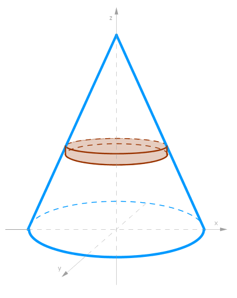
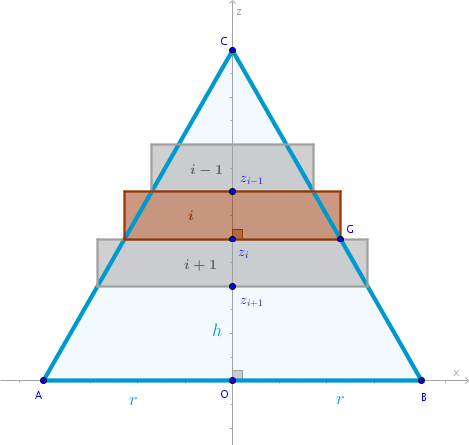

Right Circular Cone
Problem
Find the volume of a right circular cone of radius \(r\) and height \(h\).
Solution
Now that in Cylinders chapter we have deduced the formulas for the volumes of a right circular and elliptic cylinders we may use these geometric objects as our primitive parts.
For a right circular cone let us use a thin right circular cylinder as a primitive volume positioned as shown below, for example:
Please explain how the above primitive part was constructed.
Cut the cone with an \(xOz\) plane and consider its resulting triangular cross section. The primitive cylinders are represented in the drawing below as rectangles protruding beyond the surface of the cone:
Cut \(OC = h\) into \(n\) line segments of equal length that will play the role of heights of primitive cylinders which we number in the top to bottom fashion:
$$z_{i - 1}z_{i} = \Delta z = \frac {h}{n}$$Find the radius of the \(i-\)th primitive cylinder as follows. Consider the triangles \(\triangle BOC\) and \(\triangle Gz_iC\) both of which are right by construction and have a common angle at the vertex \(C\). From Euclid's "Elements" Book 1 Proposition 32 (in any triangle the sum of internal angles is equal to two right angles) it follows that all the internal angles of \(\triangle BOC\) are equal to the corresponding internal angles of \(\triangle Gz_iC\). Hence, by AAA, these triangles are similar and from Book 6 Proposition 4 (the sides about equal angles in similar triangles are in the same proportion) it follows that:
$$\frac {z_iG}{OB} = \frac {Cz_i}{CO}$$ $$\frac {r_i}{r} = \frac {\frac {h}{n}\times i}{h}$$ $$r_i = \frac {r}{n} \times i$$The volume of the \(i-\)th primitive cylinder then is:
$$V'_i = \pi r_i^2 \frac {h}{n} =$$ $$\frac {\pi r^2h}{n^3}i^2$$Sum all the volumes of all the primitive cylinders:
$$V' = \frac {\pi r^2h}{n^3} \sum_{i=1}^n i^2 =$$ $$\frac {\pi r^2h}{n^3} \frac {n(n + 1)(2n + 1)}{6} =$$ $$\frac {\pi r^2h}{n^3} \frac {n^3(1 + \frac {1}{n})(2 + \frac {1}{n})}{6}$$Cancel out the \(n^3\)s:
$$V' = \frac {\pi r^2h}{6}\Big(2 + \frac {3}{n} + \frac {1}{n^2}\Big)$$Apply the limit to \(V'\) as \(n \to +\infty\):
$$V = \lim_{n \to +\infty} V' =$$ $$\lim_{n \to +\infty}\frac {\pi r^2h}{6}\Big(2 + \frac {3}{n} + \frac {1}{n^2}\Big) =$$ $$\frac {\pi r^2h}{6}(\lim_{n \to +\infty} 2 + \lim_{n \to +\infty} \frac {3}{n} + \lim_{n \to +\infty} \frac {1}{n^2}\Big) =$$ $$\begin{equation} \frac {\pi r^2h}{3} \end{equation}$$We argue that the limit of the sum of volumes of primitive cylinders fully contained with the cone is also equal to (1), prove it. Hence:
$$\bbox[#e8e8e8,3pt]{V = \frac {\pi r^2h}{3}}$$
Right Elliptic Cone
To find the volume of a right elliptic cone of height \(h\) and semi-major axis \(a\) and semi-minor axis \(b\) we choose right elliptic cylinders as our primitive volumes.
The height of each such cylinder remains the same as above:
$$\frac {h}{n}$$The square area of the base of the \(i-\)th primitive cylinder is:
$$\pi \times x_i \times y_i$$where the \(y_i\) component is not shown in the two-dimensional rendering above.
Based on the similarity of the right triangles demonstrated earlier we obtain:
$$\begin{equation} x_i = \frac {a}{n} \times i \end{equation}$$ $$\begin{equation} y_i = \frac {b}{n} \times i \end{equation}$$As an exercise prove (2) and (3).
$$V'_i = \pi \times x_i \times y_i \times \frac {h}{n} =$$ $$\frac {\pi abh}{n^3}i^2$$ $$V' = \frac {\pi abh}{n^3} \sum_{i=1}^n i^2 =$$ $$\frac {\pi abh}{n^3} \frac {n(n + 1)(2n + 1)}{6} =$$ $$\frac {\pi abh}{6}\Big(2 + \frac {3}{n} + \frac {1}{n^2}\Big)$$And:
$$V = \lim_{n \to +\infty} V' =$$ $$\lim_{n \to +\infty}\frac {\pi abh}{6}\Big(2 + \frac {3}{n} + \frac {1}{n^2}\Big) =$$ $$\frac {\pi abh}{6}(\lim_{n \to +\infty} 2 + \lim_{n \to +\infty} \frac {3}{n} + \lim_{n \to +\infty} \frac {1}{n^2}\Big) =$$ $$\frac {\pi abh}{3}$$ $$\bbox[#e8e8e8,3pt]{V = \frac {\pi abh}{3}}$$\(\blacksquare\)